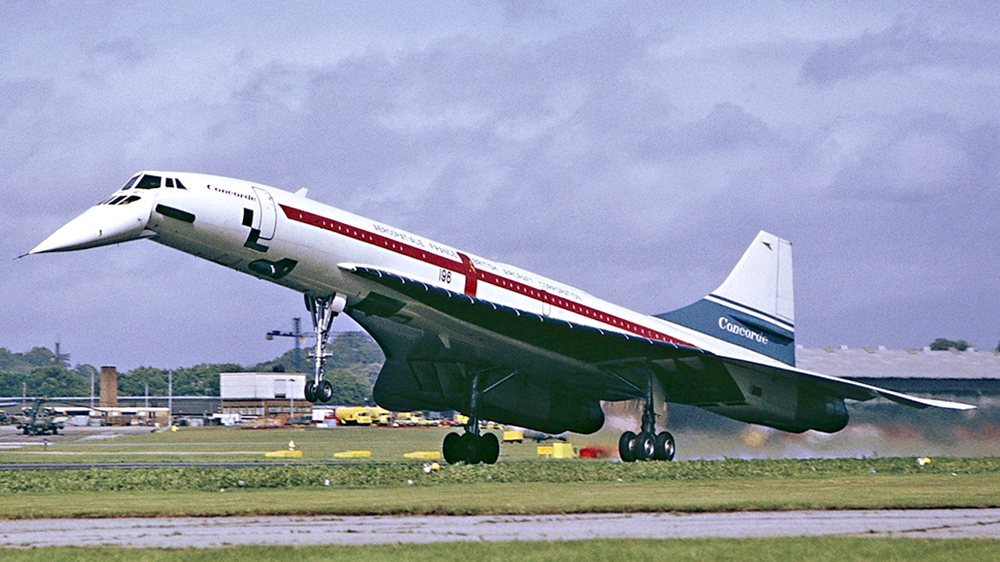

Airplanes my boyfriend likes
- SR-71
- An american military plane, from the Cold War for spy reasons. He could fly so fast that the antiair missiles couldn't reach it. Because of its speed the temperature that its body could sustain were very high, so it had to be built with titanium, which can sustain such temperatures. Cool fact: most of the titanium was bought from the URSS. The USA made many ghost-companies to buy it.
- Concorde

- A supersonic comercial plane, created by England and France, that could reach 2179km/h, or two times the sound speed. It was very popular at its time. When flying, the earth's curvature could be seen since it reach insane heights. It was really cool. Cool fact: because of its inclination while flying, its nose was very high. To allow the pilots to see the airstrip in the landing, there was a mecanism that pulled down its nose at that moment as the photo shows.
- Antonov-225
- Was the cargo plane built by the USSR and it was the largest plane in the world at its time. The main goal of its creation was to transport USSR's spacebus, but it delivered other things as well. It's cool because it's huge, so it has a funny shape. Kind of looks like a centipede because of the amount of landing gears it has.